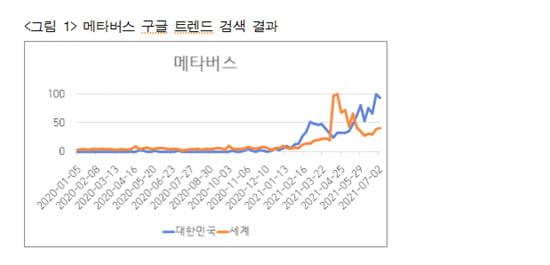

- 메타버스 란?
- 메타버스 산업
- 메타버스 미래
메타버스 미래

메타버스 산업이 지금까지는 게임, 가상공연 등 콘텐츠 산업을 중심으로 발전해 왔으나, 앞으로는 전 산업으로 확장돼 크게 팽창할 것이기 때문에 장기적인 관점에서 게임, 공연과 같은 콘텐츠뿐만 아니라 제조, 의료, 교육, 관광 등 폭넓은 산업 수요에 선제적으로 대응할 수 있는 메타버스 활용 방안이 마련돼야 한다.
마지막으로 코로나19 팬데믹, 4차 산업혁명, 가상융합 경제 등 메타버스 변화를 추동하는 산업구조의 재편 과정에서 공공과 민간의 효율적 협업체계가 요구된다. 정부는 디지털 뉴딜 정책 등을 통해서 전폭적인 투자를 진행하고 있으며, 이를 통해 우리 경제를 글로벌 선도형으로 자리매김하고자 하고 있다.
그러나 결국에는 민간의 산업 생태계가 어떻게 이루어지는가가 관건이며, 이 또한 경쟁과 협업이라는 조화를 통해 함께 상생할 수 있도록 하는 것이 중요하다. 메타버스의 위험 요소에 대한 법제도에 대해서도 조속한 정비가 필요하다.
크리에이터들이 생산하는 콘텐츠의 소유권 문제, 아바타를 이용한 성범죄 및 사기 등 불법행위, 아바타에 대한 인격권 부여에 관한 이슈 등이 해결돼야 할 과제다. 메타버스는 새롭게 형성되고 있는 시장인 만큼 시장 형성과 산업 발전 단계에 맞는 적절한 규제와 산업 진흥이라는 양면을 아우르는 정책 방향의 설정이 중요하다.